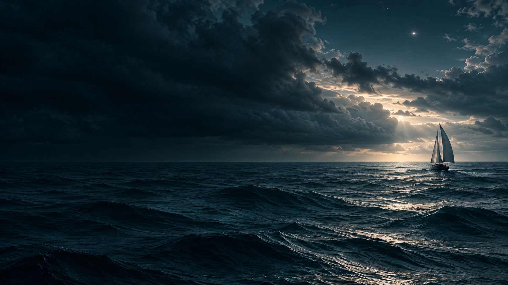

Continue ↓“and a star to steer her by” John Masefield · Sea-Fever
04 / Notes on direction
Questions before answers.
05 / An independent project
D.I.C.E.
Chance opens. The bearing is yours.
An object, a condition, a constraint. Five arbitrary words become one hash, and the hash deals the same cards on every machine. What happens next is judgement.
Seed / Reading / Result
Explore D.I.C.E. ↗